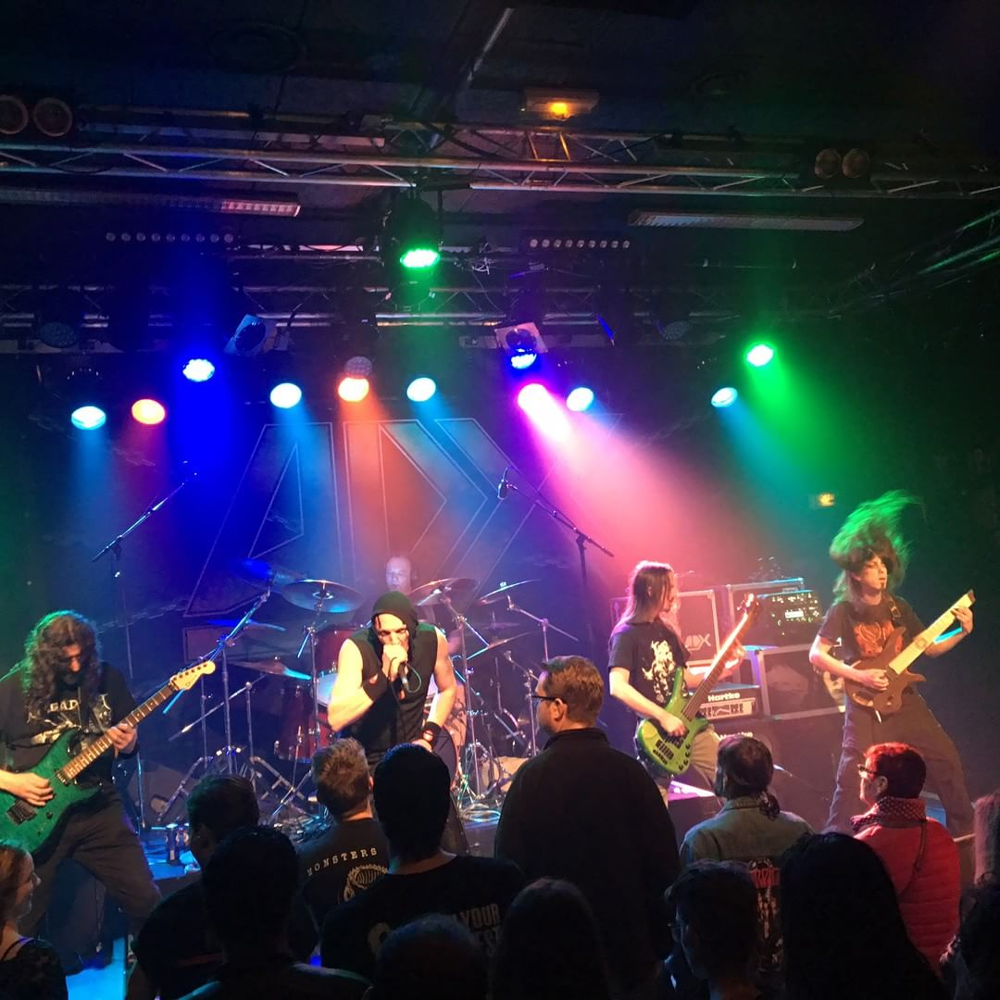

IGNIS FATUUS groupe de Thrash Death Metal du Pays de Montbéliard (France) prend vie fin 1995. Le groupe, après plusieurs changements de line up, sort 3 démos 4 titres sur la période 1996 - 2002 (The Last Church - Into The Depths Of Flesh et Rebirth) SOLD OUT 3 x 200 exemplaires, à l’époque influencées par des groupes tels CORONER, DEATH, MALEVOLENT CREATION…. En parallèle IGNIS FATUUS asso organise quelques concerts principalement sur l’Atelier Des Môles salle Rock Metal mythique de Montbéliard. Après une période d’inactivité de 2002 à 2010, IGNIS FATUUS prend la décision de lancer un projet musical de grande ampleur et l’album conceptuel « Soulbreaker » voit le jour fin 2012. IGNIS FATUUS traite de sujets variés comme la condition humaine,la souffrance, la mort et l’inexpliqué, les religions, le terrorisme, les révolutions des peuples, les dérives du capitalisme outrancier, l’écologie, la sauvegarde de la planète….etc En 2016 sort un second gros projet « Second Offering » traitant des religions polythéistes. Des titres plus percutants, sombres et directs avec toujours ces guitares mélodiques et rapides qui font l’image du combo. Cet opus beaucoup moins expérimental, plus heavy death, marque un virage certain avec l’intégration d’une nouvelle section basse batterie ultra efficace. Le nouvel album sorti sur l’automne 2019 s’intitule « Under Command Of The Leviathan Cross ». 10 nouveaux titres proposant un savant mélange des deux albums précédents, relativement plus « Metal » aux multiples influences tels SLAYER, GRIP INC, MONSTROSITY, NECROPHOBIC, DEATH ou encore AMON AMARTH. Sera t’il l’album d’une reconnaissance méritée ? IGNIS FATUUS a partager la scène avec ADX, DRAKKAR, NO RETURN, MISANTHROPE, INHUMATE, DEATH DECLINE, MERCYLESS, THE CROWN, SACRILEGE, WATCHA, NOSTROMO, CARCARIASS, BROKEN EDGE, DOWNRIGHT MALICE, BORN AGAIN, POST MORTEM, AWAKE, DAWOHL, PHENIX, APOPLEXY, ANOREXIA, DISMAL et beaucoup d’autres ……

Le groupe

Médias
Discographie
Concerts
A venir